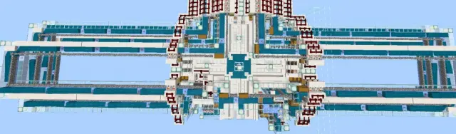
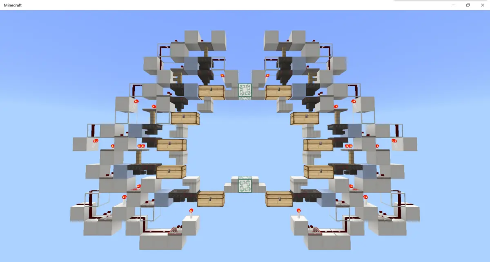
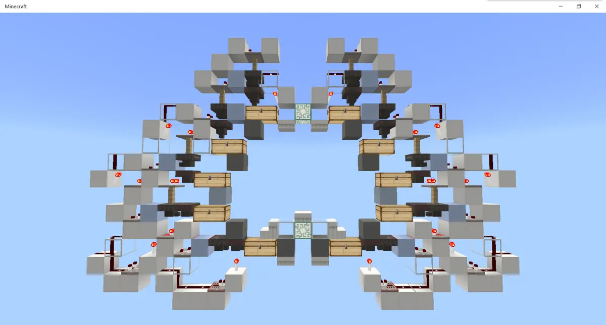
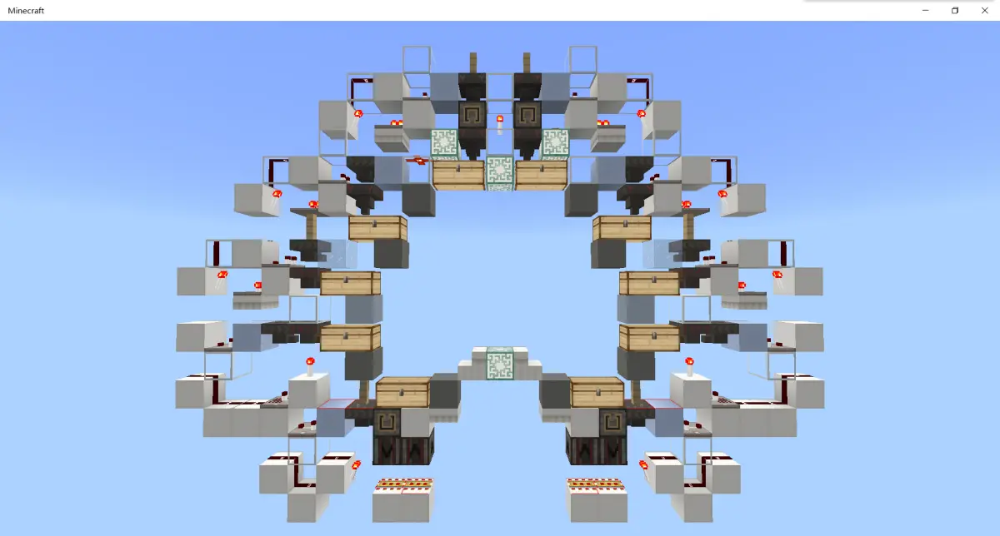

MCBE 【全物品】浅谈全物品 ep.5 附录
写在前头（感谢）
这篇文章是面向对全物品有一定理解，打算动手做却还没有开始设计的人的，并非是面向零基础的
对于全物品所大量应用的双漏斗分类的原理，这里推荐 @smart_cuber 的视频。视频中展示的大部分分类单元在be都可以使用
 【minecraft红石扫盲】物品分类竟然有这么多知识点
B 站视频 »
【minecraft红石扫盲】物品分类竟然有这么多知识点
B 站视频 »
本文参考了 @flag易 于2016年在百度帖吧发表的帖子《全物品自动分类机的设计》（链接：https://tieba.baidu.com/p/4920562733）感谢 @flag易 的这篇帖子，给刚入生电的我极大的启蒙
因为现在有较多的物品的设计资料（包括je的和be的），以及前人留下了的全物品单片设计。所以本文的侧重点是从卡顿这一点来说的
在这里感谢 @_hhhxiao 开发的 trapdoor 插件，可以精确地测量出服务器内的卡顿
 [MCBE] 1.16~1.18服务插件Trapdoor介绍与教程
B 站视频 »
[MCBE] 1.16~1.18服务插件Trapdoor介绍与教程
B 站视频 »
本文是由我和同为天火的服务器成员 @Maple_枫槭 共同撰写的。由我负责主要内容，@Maple_枫槭 负责技术指导
（这里打一波广告，天火服务器交流群：1029028772）
本文大体会分为四部分，从“绪论”、“卡顿”、“全物品的组成”、“水道的设计”来系统地阐述全物品的设计方向。由于专栏的表现能力有限，这里只讨论设计方向。具体的设计之后会以视频的方式放出
目录
1.1、什么是全物品
1.2、全物品的定位
1.3、全物品的优点与必要性
1.4、全物品的劣势
1.5、你为什么要选择全物品
1.6、全物品的组成
2.1、全物品有多卡
2.2、静态卡顿与动态卡顿
2.3、方块实体
2.3.1、什么是方块实体以及它为什么卡
2.3.2、哪些方块实体卡以及如何避免
（1）漏斗
（2）投掷器
（3）活塞
（4）箱子
（5）物品展示框
2.4、实体
2.5、其他卡顿
3.1、全物品的组成
3.2、输入
3.2.1、防熊
3.2.2、不可堆叠分离
3.2.3、潜影盒拆包
3.2.4、输入倍速
3.2.5、预分类
3.3、水道
3.4、缓存
3.5、主控
3.6、单片
3.7、大宗物品分类
3.8、全物品的布局
3.9、附加功能
3.10、装修
4.1、水道的设计目标
4.2、水道的总体设计
4.3、水道的细化设计
4.3.1、降低水道内掉落物实体的数量
4.3.2、降低掉落物实体在水道内的逗留时间
4.3.3、可用的部分转弯水道
4.4、水道的逻辑
5、附录
5.1、部分全物品单片赏析
5.2、掉落物实体在不同的水中的速度
5.2.1、灵魂沙气泡柱
5.2.2、自由下落
5.2.3、向下流动水
5.2.4、岩浆块气泡柱
5.2.3、水源
5.2.4、八格流动水浮冰道
5.3、掉落物实体在八格流动水浮冰道中的速度
5、附录
------------------
5.1、部分全物品单片赏析
因为本人入储电坑时间不长，所以这里仅展示三个单片设计。如果大家见到了好的设计可以把链接放在评论区，
lin佬的原设计，单侧仅12宽16高，三处方块展示，be第一个可以让win10玩家在中间就可以够到所有箱子的十漏斗设计

linlin yyds
稍稍魔改一下，可以在四个位置放方块展示，同时改善了原设计寻找物品仰角过大的问题。但牺牲了最下面一层的箱子露出的面积

参考了百里提出的完美五箱布局，做的ab单片设计（图中左右侧分别为a片与b片），四个位置都能展示方块，同时每个箱子都至少完整地露出了一格及以上。而且每个漏斗旁边都存在可以走人的通道
但是ab单片增加了工程量，同时铁轨的设计明显增加了施工难度

------------------
5.2、掉落物实体在不同的水中的运动速度
5.2.1、灵魂沙气泡柱
254 b 646 gt
254 b 642 gt
254 b 646 gt
254 b 646 gt
254 b 646 gt
5.2.2、自由下落
254 b 170 gt
254 b 170 gt
254 b 170 gt
254 b 170 gt
254 b 170 gt
254 b 170 gt
5.2.3、向下流动水
254 b 136 gt
254 b 136 gt
254 b 136 gt
254 b 136 gt
254 b 136 gt
254 b 138 gt
5.2.4、岩浆块气泡柱
254 b 858 gt
254 b 860 gt
254 b 858 gt
254 b 858 gt
254 b 860 gt
254 b 858 gt
5.2.5、水源
218 b 5 min
216 b 5 min
5.2.6、浮冰水道（八格水道）
7 b 36 gt 32 gt 34 gt
17 b 62 gt 60 gt 62 gt
26 b 88 gt 84 gt 86 gt
35 b 110 gt 108 gt 110 gt
44 b 132 gt 130 gt 132 gt
53 b 154 gt 152 gt 154 gt
62 b 176 gt 174 gt 176 gt
71 b 198 gt 196 gt 198 gt
80 b 220 gt 218 gt 220 gt
------------------------------
5.3、掉落物在八格浮冰水道上的运动速度
（因为b站的神必的问题导致无法编辑下面的数据，所以大家就凑合看吧）
路程 游戏内gt 对照txt文档节点 从起点出发用时 从上一格出发用时 上一个节点到该节点用时
0 6652 *
1 6652 0 0
2 6654 2 2
3 6662 10 8
4 6668 16 6
5 6672 20 4
6 6676 24 4
7 6680 28 4
8 6684 * 32 4 32
9 6688 36 4
10 6690 38 2
11 6694 42 4
12 6698 46 4
13 6700 48 2
14 6704 52 4
15 6706 54 2
16 6710 58 4
17 6712 * 60 2 28
18 6714 62 2
19 6718 66 4
20 6720 68 2
21 6724 72 4
22 6726 74 2
23 6728 76 2
24 6730 78 2
25 6734 82 4
26 6736 * 84 2 24
27 6740 88 4
28 6742 90 2
29 6744 92 2
30 6746 94 2
31 6748 96 2
32 6752 100 4
33 6754 102 2
34 6756 104 2
35 6758 * 106 2 22
36 6762 110 4
37 6764 112 2
38 6766 114 2
39 6768 116 2
40 6772 120 4
41 6774 122 2
42 6776 124 2
43 6780 128 4
44 6782 * 130 2 24
45 6784 132 2
46 6788 136 4
47 6790 138 2
48 6792 140 2
49 6794 142 2
50 6798 146 4
51 6800 148 2
52 6802 150 2
53 6804 * 152 2 22
54 6806 154 2
55 6808 156 2
56 6810 158 2
57 6814 162 4
58 6816 164 2
59 6818 166 2
60 6820 168 2
61 6824 172 4
62 6826 * 174 2 22
63 6828 176 2
64 6830 178 2
65 6832 180 2
66 6836 184 4
67 6838 186 2
68 6842 190 4
69 6844 192 2
70 6844 192 0
71 6848 * 196 4 22
72 6850 198 2
73 6852 200 2
74 6854 202 2
75 6856 204 2
76 6860 208 4
77 6862 210 2
78 6866 214 4
79 6868 216 2
80 6870 * 218 2 22
写在最后（作者的碎碎念）
终于艰难地把这篇文章完结了2333
侧重于卡顿这一点将全物品的细化设计和设计目标全部讲解了一遍 (=・ω・=)
再次感谢学姐的trapdoor插件，改变了很多全物品单片的布线原则
（封面来源：天火创造服全物品）